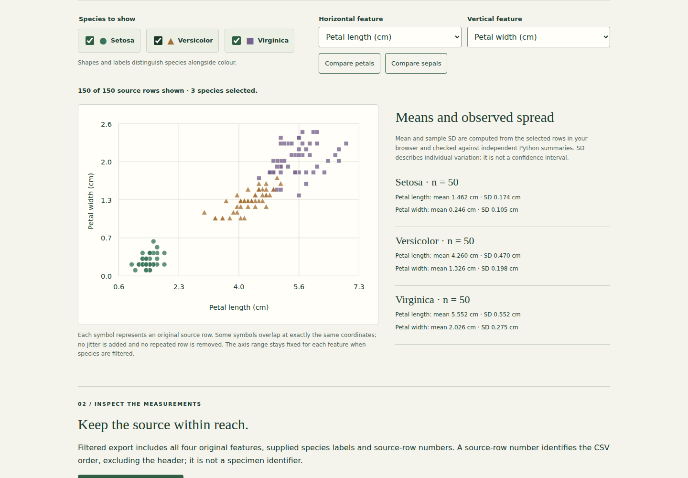
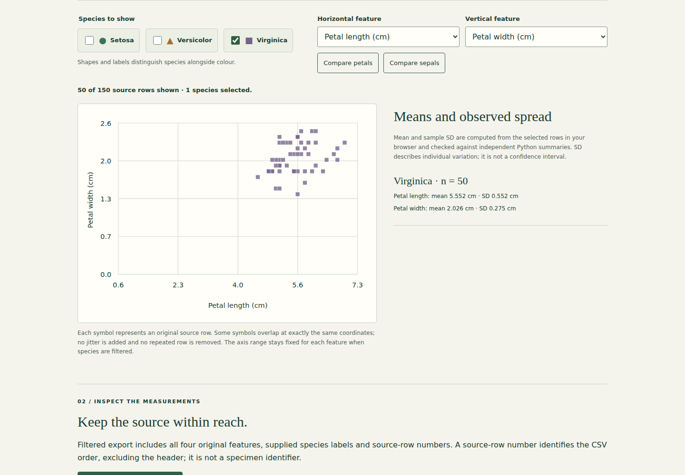
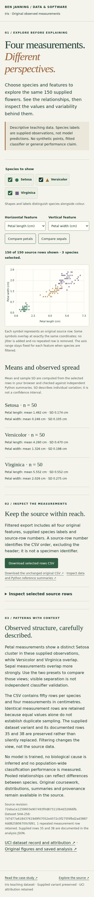
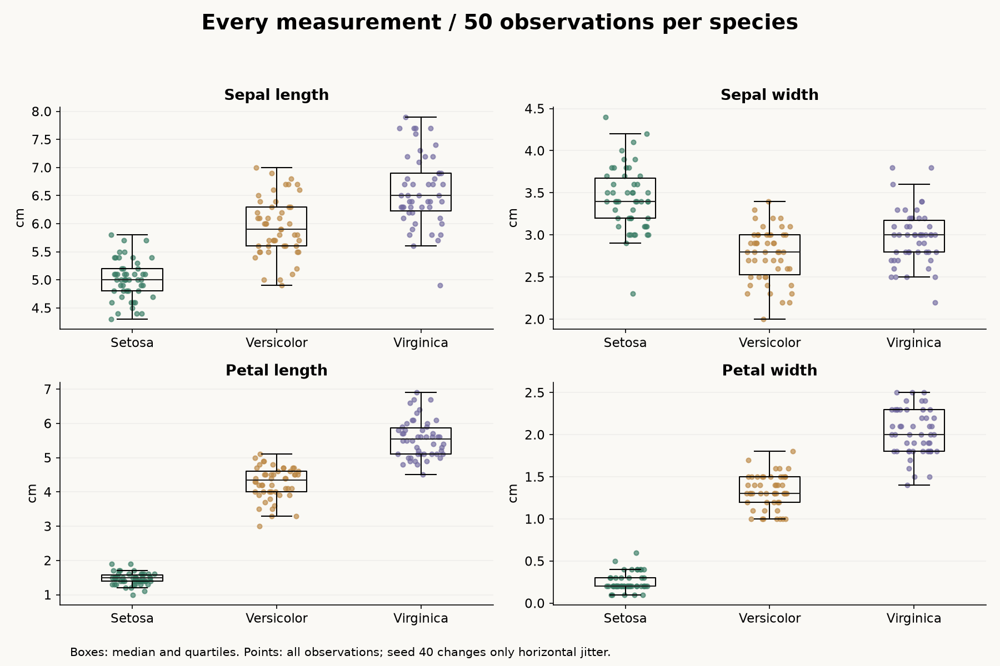

Iris dataset exploration.
Filter species, compare any pair of Iris measurements and inspect the original rows behind independently checked summaries.
Public demo: browser-based static version. See source for architecture and limitations.

What I built
Built an interactive observation lab over the preserved 150-row analysis, with species filters, four-feature selectors, exact source tables and filtered CSV downloads.
Why it matters
Before choosing a model, it helps to see how measurements vary and which features reveal useful structure. Clear exploratory analysis makes a dataset easier to understand.
How it works
- 01
Choose observed species and any horizontal/vertical feature; axis ranges stay fixed as species change.
- 02
Compare browser-computed means and sample SD with independent Python reference summaries.
- 03
Inspect every selected source row or download all four original measurements and supplied species labels.
The technical challenge
Filtering must change the view without changing the evidence. The browser computes summaries independently, while Python exports reference statistics from the preserved source. Every feature pair is checked, repeated rows retain their original order, and the source hash and documented variant travel with the release.
What it demonstrates
Data provenance, descriptive statistics, independent numerical checks, accessible interactive graphics and reproducible publication.
Evidence, with context.
150 supplied observations, 50 per species. Mean petal lengths: Setosa 1.462 cm, Versicolor 4.260 cm, Virginica 5.552 cm. Setosa forms a distinct petal cluster in these observations; Versicolor and Virginica overlap. All four measurements and all species labels are observed data, not model predictions. Repeated measurement rows are retained; this descriptive teaching sample does not establish general classification performance.
Verified source: 72eba1e12596 · Tests and visual capture ↗








Scope and limitations
This is descriptive exploration of a small, familiar teaching dataset. Separation in these observations is not independent validation of a classifier or evidence of general performance. Pooled correlations mix species and do not establish causation. Identical measurement rows are retained because equality alone does not prove duplicate sampling. The supplied CSV is preserved; historical Iris variants differ in two documented observations.
Visual provenance and source attribution are recorded in the evidence register ↗.
Under the surface.
Architecture, methods and improvements
The original analysis now also exports every source row and twelve reference summaries. Five Python regressions reconcile original rows, historical variants, provenance and statistics; two Node checks cover sample SD and CSV semantics; three browser journeys cover all sixteen feature pairings, filters, exports, failed loading and narrow layouts. Generated build metadata stays untracked. Original coursework and data remain intact.
Try it locally
Install requirements.txt; run python explore_iris.py, python -m unittest discover -p "test_*.py" -v and python build_explorer.py. Run npm ci, npm run test:rules, npx playwright install chromium and npm run test:browser. Serve docs locally to explore.
The portfolio is a static GitHub Pages site. Server applications run locally; the portfolio does not collect bookings, credentials or payments.